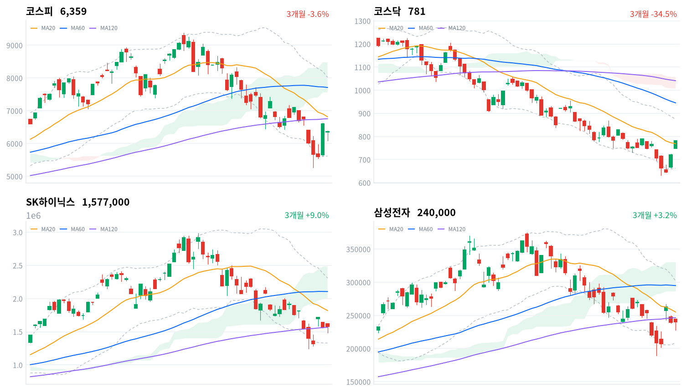

코스피는 개장 직후 6,083.64까지 밀렸던 대형 반도체주가 오후 들어 낙폭을 만회하며 반등을 이끌었다. 코스닥은 오전부터 이어진 사이드카 국면 속에 건강관리기술(+11.06%)·우주항공과국방(+10.30%) 등 비반도체 업종이 breadth 0.85~1.0의 폭넓은 상승을 보이며 급등했다. 다만 코스피는 지수 상승에도 외국인(-3,716억원)·기관(-5,385억원)이 나란히 순매도(당일 잠정)해, 개인 순매수(+8,187억원)가 상승분을 떠받친 하루였다.
동인오늘 장을 움직인 축은 미국발 반도체 훈풍과 코스닥 사이드카 두 가지다. 전일 밤(8/3 현지시간) 미국 증시가 중동 지정학 리스크 완화·국제유가 급락과 빅테크 실적 기대 속에 다우 사상 최고치·나스닥 강세를 기록했고(아마존 +4.6%, 마이크로소프트 +5%대), 이 훈풍이 국내 대형 반도체주로 이어지며 장 초반 6,083.64까지 밀렸던 삼성전자·SK하이닉스가 오후 들어 반등해 코스피를 6,358.95(+1.62%)까지 끌어올렸다. 코스닥은 사흘 연속 매수 사이드카가 발동되는 가운데 건강관리기술(+11.06%)·우주항공과국방(+10.30%)·생물공학(+9.64%) 등 비반도체 업종이 폭넓게(breadth 85.3~100%) 오르며 780.72(+5.88%)로 마감했다.
정합성코스피는 지수가 오른 것과 달리 외국인(-3,716억원)·기관(-5,385억원)이 모두 순매도해(당일 잠정) 수급 방향이 가격과 어긋난다. 개인이 +8,187억원 순매수하며 매도 물량을 받아냈고, 프로그램 매매에서도 비차익이 -2,571억원 순매도(전체 -4,070억원)로 외국인 순매도 방향과 일치해, 오늘 상승이 외국인·기관 자금이 아니라 개인 매수 하나로 지탱됐다는 판단을 뒷받침한다. 코스닥은 반대로 기관이 +5,438억원 순매수를 주도했지만 프로그램 비차익은 -2,317억원 순매도를 기록해, 급등의 동력이 프로그램 바스켓 밖 개별 종목에 대한 기관의 직접 매수였다는 뜻으로 읽힌다.
확인 트리거코스피는 120일선(6,756.78)·20일선(6,816.55)을 모두 밑돌고 구름대(7,557.91~8,476.50) 아래에 머물러 있어, 이 두 이동평균선 회복 여부가 오늘 반등이 이어질지를 가를 1차 분기점이다. 코스닥은 오늘 20일선(768.53)을 다시 웃돌았지만 60일선(945.20)·120일선(1,041.02)이 여전히 위에 있는 역배열 구조가 남아 있어, 기준선(793.22) 회복이 다음 확인 지점이다. 정책 측면에서는 8월 27일 한은 금통위와 미 반도체 232조 관세 2단계 발표 시점(일정 미확정)이 다음 촉매로 꼽힌다.
| 지수 | 종가 | 등락률 | 일중고가 | 일중저가 |
|---|---|---|---|---|
| 코스피 | 6,358.95 | +1.62% | 6,389.40 | 6,080.25 |
| 코스닥 | 780.72 | +5.88% | — | — |
코스닥은 일중 고가·저가 데이터가 제공되지 않아 종가·등락률만 표기했다.
코스피는 전일 종가 6,257.45 대비 6,351.38로 갭 상승 출발했다(약 +1.5%). 개장 직후 30분봉 종가 기준 6,367.83까지 오르며 일중 고가(6,389.40) 부근을 스친 뒤, 09시30분 6,232.28에 이어 10시에는 6,083.64까지 밀리며 일중 저가(6,080.25) 부근에서 저점을 다졌다.
10시30분부터 반등이 시작돼 11시 6,305.11까지 올랐다가 11시30분~13시 사이 6,189~6,221 구간에서 등락하며 오후 초반까지 뚜렷한 방향을 잡지 못했다. 14시 이후 되돌림이 재개돼 14시30분 6,236.32, 15시 6,320.79로 오르더니 15시30분 6,358.95로 마감하며 장 후반 상승폭을 키웠다(+1.62%).
코스닥은 30분봉 데이터가 제공되지 않아 장중 궤적은 다루지 않지만, 사흘 연속 매수 사이드카가 발동되며 780.72(+5.88%)로 마감했다는 점이 오늘의 핵심 촉매로 꼽힌다(뉴스핌).

코스피·코스닥·SK하이닉스·삼성전자 3개월 일봉 캔들에 20·60·120일 이동평균, 볼린저밴드(점선), 일목균형표 구름대(음영)를 오버레이했다. 상승은 녹색, 하락은 적색 캔들로 표시된다.
코스피는 6,358.95로 마감해 20일선(6,816.55, -6.71% 이격)과 60일선(7,709.76, -17.52%), 120일선(6,756.78, -5.89%)을 모두 밑돌아 이동평균선 배열이 혼조 상태를 유지했다. 일목균형표상 전환선(6,214.39)은 종가 아래 있지만 기준선(7,062.24)과 구름대(7,557.91~8,476.50)는 모두 위쪽에 있어 가격이 구름대 하단 밑에 머무는 국면이고, 볼린저밴드 %b는 0.309로 중심선(6,816.55)과 하단(5,616.34) 사이 하단권에 걸쳐 있다.
상승 시나리오는 120일선(6,756.78)과 20일선(6,816.55) 회복이 1차 확인 지점이며, 이를 넘어서면 기준선(7,062.24)→구름대 하단(7,557.91)→60일선(7,709.76)→볼린저 상단(8,016.77)→20일 스윙 고점(8,327.26)→구름대 상단(8,476.50)을 거쳐 60일 스윙 고점(9,385.59)까지 저항이 이어진다. 하락 시에는 전환선(6,214.39) 이탈→볼린저 하단(5,616.34)→20·60일 스윙 저점(5,262.77)이 최후 지지선 순서다.
코스닥은 780.72로 마감해 20일선(768.53) 위로 올라섰지만(+1.59% 이격) 60일선(945.20, -17.40%)과 120일선(1,041.02, -25.00%)은 여전히 크게 밑돌아, 단기·중기·장기 이동평균이 순서대로 낮아지는 역배열 구조 자체는 유지됐다. 일목균형표 기준선(793.22)이 종가 바로 위에 걸려 있고 구름대(1,006.88~1,056.74)는 훨씬 위쪽이라 가격은 여전히 구름대 아래 국면이며, 볼린저 %b는 0.558로 중심선을 넘어선 중상단권까지 올라왔다.
상승 트리거는 기준선(793.22) 회복이며, 이후 20일 스윙 고점(872.12)→볼린저 상단(874.33)→60일선(945.20)→구름대 하단(1,006.88)→120일선(1,041.02)→구름대 상단(1,056.74)을 거쳐 60일 스윙 고점(1,225.29)까지 저항이 겹겹이 남아 있다. 하락 시에는 오늘 되찾은 20일선(768.53)이 1차 지지선이며, 이탈하면 전환선(710.64)→볼린저 하단(662.72)→20·60일 스윙 저점(630.99)이 최후 지지선이다.
SK하이닉스는 1,577,000원으로 마감해 120일선(1,566,842원, +0.65% 이격)은 근소하게 웃돌았지만 20일선(1,819,200원, -13.31%)과 60일선(2,105,200원, -25.09%)은 여전히 크게 밑돌아 이동평균선 배열이 혼조다. 일목균형표 전환선(1,597,000원)이 종가 바로 위에 걸려 있고 기준선(1,994,000원)·구름대(1,991,500원~2,487,500원)는 그보다 더 위쪽에 있어 가격은 구름대 아래 국면을 벗어나지 못했으며, 볼린저 %b는 0.253으로 하단에 가깝게 눌려 있다.
상승 시나리오는 전환선(1,597,000원) 회복을 기점으로 20일선(1,819,200원)→구름대 하단(1,991,500원)→기준선(1,994,000원)→60일선(2,105,200원)→볼린저 상단(2,309,016원)→20일 스윙 고점(2,343,000원)→구름대 상단(2,487,500원)을 거쳐 60일 스윙 고점(2,987,000원)까지 저항이 이어진다. 하락 시에는 오늘 근소하게 회복한 120일선(1,566,842원)이 1차 지지선이며, 이탈하면 볼린저 하단(1,329,384원)→20·60일 스윙 저점(1,246,000원)이 최후 지지선이다.
삼성전자는 240,000원으로 마감해 120일선(246,565원, -2.66% 이격)과 20일선(255,150원, -5.94%)을 모두 밑돌고 60일선(294,917원, -18.62%)과는 격차가 더 벌어져 있어 이동평균선 배열이 혼조다. 전환선(231,100원)은 종가 아래 있으나 기준선(266,100원)·구름대(286,350원~330,625원)는 위쪽에 있어 가격이 구름대 아래에 머무는 국면이며, 볼린저 %b는 0.338로 중심선(255,150원) 아래쪽에 위치한다.
상승 트리거는 120일선(246,565원) 회복 이후 20일선(255,150원)→기준선(266,100원)→구름대 하단(286,350원)→60일선(294,917원)→볼린저 상단(301,876원)→20일 스윙 고점(310,000원)→구름대 상단(330,625원)을 거쳐 60일 스윙 고점(374,500원)까지 열려 있다. 하락 시에는 전환선(231,100원) 이탈→볼린저 하단(208,424원)→20·60일 스윙 저점(189,200원)이 최후 지지선 순으로 짚인다.
위 레벨은 모두 이동평균·볼린저밴드·일목균형표·스윙 고저의 기계적 계산값이며 투자 권유가 아니다.
코스피·코스닥 수급은 2026-08-04 당일 잠정치다(kr_flows.json label: 당일 잠정치, stale: false). 코스피에서 외국인이 -3,716억원, 기관이 -5,385억원으로 나란히 순매도한 반면 개인은 +8,187억원 순매수해 지수 상승(+1.62%)에도 외국인·기관의 방향은 매도였다. 코스닥에서는 기관이 +5,438억원 순매수를 주도했고 외국인(-2,775억원)·개인(-2,587억원)은 순매도해, +5.88% 급등의 동력이 기관 수급 한 곳에 집중됐다.
| 시장 | 개인 | 외국인 | 기관 |
|---|---|---|---|
| 코스피 (당일 잠정) | +8,187억원 | -3,716억원 | -5,385억원 |
| 코스닥 (당일 잠정) | -2,587억원 | -2,775억원 | +5,438억원 |
단위 억원. kr_flows.json 기준 2026-08-04 당일 잠정치(label: 당일 잠정치, stale: false).
코스피는 지수 상승에도 외국인·기관이 모두 순매도해 방향이 어긋난다 — 개인의 순매수(+8,187억원)가 매도 물량을 받아내며 지수를 밀어올린 모습으로, 이 당일 잠정치가 확정되면 방향이 바뀔 수 있어 다음 거래일 확정치 확인이 필요하다. 코스닥은 기관 순매수(+5,438억원)와 지수 급등(+5.88%) 방향이 일치해, 이번 상승이 기관 자금 유입으로 뒷받침됐다는 해석에 더 무게가 실린다.
| 시장 | 차익 순매수 | 비차익 순매수 | 전체 순매수 |
|---|---|---|---|
| 코스피 (당일 잠정) | -1,499억원 | -2,571억원 | -4,070억원 |
| 코스닥 (당일 잠정) | +174억원 | -2,317억원 | -2,143억원 |
단위 억원. kr_program.json 2026-08-04 당일 잠정치(row[0]).
코스피 비차익 순매도(-2,571억원)는 외국인 순매도(-3,716억원)와 같은 방향으로, 선물 재정 성격의 차익(-1,499억원)보다 방향성 바스켓 매도가 외국인 이탈과 궤를 같이했다. 다만 총 프로그램 순매도(-4,070억원)에도 지수가 +1.62% 올랐다는 점은, 프로그램 밖 개인 매수(+8,187억원)가 이 매도 물량을 상쇄하고도 남았다는 뜻이다.
코스닥은 비차익이 -2,317억원 순매도해 외국인 순매도(-2,775억원)와 방향이 일치하지만, 정작 코스닥 급등(+5.88%)을 이끈 것은 프로그램 표에 잡히지 않는 기관의 개별 종목 순매수(+5,438억원)로 보인다 — breadth 85.3~100%의 폭넓은 상승 업종(건강관리기술·우주항공과국방·생물공학 등)에 기관 자금이 프로그램 바스켓 밖에서 유입됐다는 뜻이다.
| 종목/ETF | 구분 | 거래대금(백만원) | 조 환산 |
|---|---|---|---|
| SK하이닉스 | 종목 | 8,191,691 | 8.19조원 |
| 삼성전자 | 종목 | 6,879,305 | 6.88조원 |
| SK이터닉스 | 종목 | 724,282 | 0.72조원 |
| SK하이닉스 레버리지 | 레버리지(롱) | 645,218 | 0.65조원 |
| TIGER 반도체TOP10 | 업종테마ETF | 515,632 | 0.52조원 |
| NAVER | 종목 | 513,793 | 0.51조원 |
| 삼성전자우 | 종목(우선주) | 445,922 | 0.45조원 |
| KODEX 반도체레버리지 | 업종테마ETF | 436,981 | 0.44조원 |
| SOL AI반도체TOP2플러스 | 업종테마ETF | 389,538 | 0.39조원 |
| 삼성전자 레버리지 | 레버리지(롱) | 301,825 | 0.30조원 |
같은 기초자산 ETF를 방향별로 묶고 지수·해외 ETF 제외. 코스피200·코스닥150 추종 및 그 레버리지·인버스는 정규화 단계에서 제외돼 표에 없다.
SK하이닉스(8.19조원)·삼성전자(6.88조원) 두 종목이 거래대금 1·2위를 지켰고, SK이터닉스(0.72조원)가 3위에 오르며 SK그룹 반도체 밸류체인 전반에 자금이 함께 몰렸다. SK하이닉스 레버리지(롱, 0.65조원)·삼성전자 레버리지(롱, 0.30조원)가 각각 4위·10위에 오른 반면 인버스(숏) 상품은 이날 상위 10위 안에 하나도 들지 않아, 급등장에서 개인 투자자들의 방향성 베팅이 상승 쪽으로 쏠렸다는 뜻으로 읽힌다.
TIGER 반도체TOP10·KODEX 반도체레버리지·SOL AI반도체TOP2플러스까지 반도체 테마 ETF 3종이 나란히 상위권을 채웠고, NAVER(0.51조원)·삼성전자우(0.45조원)가 뒤를 이어 거래대금이 반도체 한 곳에만 쏠리지는 않았음을 보여준다.
더 세분화된 업종 분류(kr_industry.json)에서는 건강관리기술(+11.06%, breadth 100%, 12종목 전원 상승)·우주항공과국방(+10.30%, breadth 93.9%, 33종목 중 31종목 상승)·생물공학(+9.64%, breadth 86.2%, 58종목 중 50종목 상승)·에너지장비및서비스(+9.38%, breadth 85.3%)가 유동성까지 뒷받침된 폭넓은 상승 주도로 분류됐다. 이들은 앞서 macro 섹터 스니펫의 헬스케어(+6.00%)·방산(+8.98%) 상승과 방향은 같지만, 분류 체계가 달라 수치가 정확히 일치하지는 않는다.
반면 생명과학도구및서비스(+9.35%, breadth 80.5%)·판매업체(+8.22%, breadth 76.9%)·건설(+8.17%, breadth 80.8%, 78종목 중 63종목 상승)은 상승률만 보면 최상위권이지만 유동성 크로스체크에서 좁은 상승·개별종목으로 판정돼, 상승률 하나만으로 업종 전체가 주도했다고 보기는 어렵다. 코스닥 급등의 실질적인 폭은 무선통신서비스(+8.79%, breadth 100%, 4종목 전원 상승)·건강관리업체및서비스(+7.58%, breadth 86.7%, 30종목 중 26종목 상승)처럼 규모는 작아도 종목 전원 또는 대부분이 함께 오른 업종에서 더 뚜렷하게 확인된다.
삼성전자·SK하이닉스는 장 초반 약세를 딛고 장 후반 반등하며 코스피 반등을 이끌었고, 거래대금에서도 각각 6.88조원·8.19조원으로 1·2위를 지켰다. 밤사이 미국 빅테크·AI 인프라 관련주 강세(아마존 +4.6%, 마이크로소프트 +5%대)가 국내 반도체 대형주 반등으로 이어진 경로로 지목된다(한국경제, 파이낸셜뉴스).
SK이터닉스는 거래대금 0.72조원으로 3위에 올라 SK하이닉스와 함께 SK그룹 반도체 밸류체인에 자금이 몰렸음을 보여준다. NAVER(0.51조원)·삼성전자우(0.45조원)도 거래대금 상위권에 이름을 올려, 자금이 반도체 한 곳에만 머물지 않았다.
코스닥 상승은 특정 종목보다 업종 전반의 순환매 성격이 짙다. 건강관리기술(+11.06%)·우주항공과국방(+10.30%)·생물공학(+9.64%) 등 바이오·방산 업종에 기관 순매수(+5,438억원, 당일 잠정)가 집중됐다는 보도가 나온다(뉴스핌).
이번 데이터셋에는 원/달러 종가 수치가 포함되지 않아 환율 서술은 생략한다.
| 지표 | 금리 | 전일比(bp) | 기준일 |
|---|---|---|---|
| 국고채 3년 | 3.74% | -0.2bp | 2026-08-04 |
| 국고채 10년 | 4.26% | -0.4bp | 2026-08-04 |
| CD 91일 | 2.93% | 0.0bp | 2026-08-04 |
| 회사채 AA- 3년 | 4.458% | -0.4bp | 2026-08-04 |
| 한국은행 기준금리 | 2.75% | +25.0bp | 2026-07 기준(월간 지표) |
단위 연%. ECOS(한국은행 경제통계시스템) 기준. 한국은행 기준금리는 월간 지표로 2026-07 갱신치이며 report_date(2026-08-04)와 기준일이 다르다.
국고채 3년(-0.2bp)·10년(-0.4bp) 모두 소폭 하락한 가운데 10년-3년 스프레드는 전일 0.522%p(4.264%-3.742%)에서 오늘 0.52%p(4.26%-3.74%)로 미세하게 좁혀져 거의 변화 없는 평행 이동에 가깝다. 원/달러 환율 데이터가 없어 국고채 10년물↔외국인 순매도↔원화 흐름의 삼각 연계는 이번에도 점검할 수 없다. 회사채 AA- 3년과 국고채 3년의 스프레드는 0.718%p(4.458%-3.74%)로 전일(0.720%p)과 거의 같아, 코스피·코스닥 동반 급등에도 신용 심리에는 별다른 동요가 없다.
kr_econ.json의 한국은행 기준금리 항목은 이번에 2026-07 기준 2.75%로 갱신돼(전월 6월 2.50%에서 +25bp), 7월 한은의 기준금리 인상이 데이터에 반영됐다. 국고채 3년물(3.74%)이 실제 정책금리(2.75%)보다 약 0.99%p 높은 수준을 유지하고 있어, 시장이 여전히 추가 인상 가능성을 일부 선반영하고 있다고 볼 수 있다.
미국은 무역확장법 232조 1단계로 첨단 컴퓨팅칩·파생제품에 이미 25% 관세를 부과했고, 협상 결과에 따라 반도체 전반으로 확대하는 2단계를 예고한 상태다. 다만 한국은 8월 1일 시한 전 관세 협상을 타결해 상호관세 15%·자동차 관세 15%를 확보했고, 반도체·의약품 관세도 최혜국(MFN) 대우를 확보해 경쟁국 대비 불리하지 않은 조건을 마련했다고 보도된다(정책브리핑, 머니투데이).
관세 확정은 대미 수출 예측 가능성을 높여 반도체·자동차 대형주의 실적 눈높이(멀티플) 정상화 요인으로 작용하는 경로다. 다만 2단계(반도체 전반 확대)가 실제 발동되면 밸류에이션 재조정 리스크는 여전히 남아 있다.
수혜 구간은 반도체(삼성전자·SK하이닉스)·자동차(현대차·기아)·의약품·바이오이고, 피해 구간은 2단계 관세 확대 시 반도체 장비·소재 밸류체인 전반이다. 다만 오늘 삼성전자·SK하이닉스의 장 후반 반등은 밤사이 미국 빅테크·AI 인프라 강세가 1차 동인으로 지목되고 있어, 관세 협상 타결 자체는 8월 1일 이전에 이미 가격에 선반영된 재료로 판단된다 — 오늘 하루의 가격 움직임을 관세 뉴스로 새로 설명하기는 어렵다.
2단계 품목·세율 확정 발표 시점과 미 상무부 세부 시행령 공개 시점은 일정 미확정이다. 발표 시 반도체 장비·소재주의 외국인 수급과 주가 반응을 확인 트리거로 삼는다.
2026년 2월 국회 본회의를 통과한 3차 상법 개정으로 회사가 취득하는 자기주식은 취득일로부터 1년 내 소각이 원칙이 됐다(기존 보유분은 1년 6개월 내). 임직원 보상 등 예외 목적으로 활용하려면 주총 승인을 받는 자기주식 보유·처분계획 작성이 의무화됐다(법률신문, 김앤장).
자사주 매입 후 미소각 관행을 차단해 실질 주주환원(EPS 희석 방지)을 강제하는 경로로, 밸류업 프로그램과 연계해 저PBR·자사주 보유 비중이 높은 기업의 멀티플 재평가 유인으로 작동한다.
수혜 구간은 자사주 보유 비중이 높은 금융지주·대형 제조 대기업이고, 피해 구간은 자사주를 임직원 보상 재원으로 활용해온 기업(예외 승인 절차 부담 증가)이다. 오늘 증권(+1.63%, breadth 89.7%)·기타금융(+1.85%, breadth 83.3%) 업종은 코스피 평균(+1.62%)과 비슷한 수준에 그쳐, 자사주 소각 의무화 재료가 오늘 하루로는 뚜렷하게 반영됐다고 보기 어렵다 — 아직 반영 안 됨으로 판단한다.
시행령 세부 기준과 개별 기업의 자기주식 소각 공시 확산 여부가 다음 확인 트리거이며, 구체 일정은 미확정이다.
배당소득 분리과세(최고세율 49.5%→38.5%, 2026~2028년 한시 적용)와 관련해 국회에서 정부가 적용 시기를 예정보다 앞당기는 방안을 검토 중이라는 보도가 나온다. 대주주 양도세 관련 세제 혜택은 시장 기대에 못 미친다는 평가도 함께 나온다(토스뱅크, 나무위키).
분리과세가 조기 시행되면 고배당주의 실효 배당수익률이 개선돼 배당 성향이 높은 종목의 수급(개인·고액자산가 수요) 경로가 열리고, 대주주 양도세 이슈는 대주주 지분 매도 유인·제약에 영향을 준다.
수혜 구간으로 고배당 금융지주·통신·정유가 꼽힌다. 오늘 석유와가스(+2.55%, breadth 89.5%)는 코스피 평균을 웃돌았지만 증권(+1.63%)·기타금융(+1.85%)은 평균 수준에 그쳤고, 이는 오늘 시장 전반이 워낙 폭넓게 오른 날이라 고배당 업종만의 초과 상승으로 구분하기 어렵다 — 분리과세 조기화 기대가 아직 선별적으로 반영됐다고 보기는 이르다.
국회 기재위 세법 개정안 처리 일정과 시행 시기 확정 여부는 미확정이다. 처리 시점이 잡히면 고배당 업종의 수급 변화를 확인 트리거로 본다.
하반기 남은 금통위 정례회의는 8월 27일·10월 22일·11월 26일이다. kr_econ.json 기준 한국은행 기준금리는 2026-07 기준 2.75%로, 전월(2026-06) 2.50%에서 25bp 인상됐다. 국고채 3년(3.74%)·10년(4.26%)은 전일 대비 각각 -0.2bp·-0.4bp로 소폭 하락했다.
다음 금통위(8/27)까지 약 3주 남은 통화정책 공백기 동안 시장은 미국 금리·환율 변수에 더 민감하게 반응할 가능성이 있다. 금리 레벨 자체보다 방향성 기대가 성장주 밸류에이션(멀티플) 경로로 작동한다.
성장주(바이오·2차전지 등)가 금리 인상 우려 완화 시 우호적인 수혜 구간으로 꼽히는데, 오늘 생물공학(+9.64%)·전기장비(+6.43%, breadth 91.4%)가 강하게 오른 것은 방향은 겹치지만 1차 동인은 미국발 반도체·AI 훈풍과 코스닥 사이드카로 지목돼, 금리 기대 변화가 오늘 상승의 직접 원인이라 보기는 어렵다 — 우연히 방향이 겹친 동반 효과로 판단한다.
8월 27일 금통위가 다음 확인 지점이다. 그 전까지 국고채 3년물(3.74%)과 실제 정책금리(2.75%)의 스프레드(약 0.99%p)로 추가 인상 기대 선반영 여부를 점검한다.